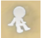

Game Guide
2. Basic Operation and UI
2021-11-10
2. Basic Operation and UI
In this guide, we’ll look into:
1. How to move your character around
2. How to interact with NPCs in the game
3. User Interface (UI) features
▣ Moving your character
There are two ways to move your character around.
First, you can use the joystick at the bottom left to move your character.
Second, you can tap the area where you want to go to move your character.
▣ Interacting with NPCs
You would always see at least one NPC while you’re on an adventure.
To talk to the NPC, simply tap the NPC.
Your character will automatically walk toward the NPC and begin a conversation.

▣ User Interface (UI) Features
Each UI element on the screen plays an important role in helping you make the most of your adventure. Understanding their roles helps you maximize your character and progress through the game!
Here are the key UI features on the screen and what they represent:
On the upper right are tools used to keep track of your adventures.
- Trade opens the Trade window, allowing you to see which items are currently for sale by other players.
- RO Shop opens the Mall, where you can spend Zeny, Eden Coins, or Nyan Berries to obtain items.
- Reward lets you see any awards you are currently eligible for
- Guide opens the Adventure Guide menu, allowing you to access several informational journals with details logged from your adventures
- Skill opens your Skill window
- Daily opens your Commission Quest window
- Event opens the Event Map window, showing you current events happening in various places in game
- Inventory opens your Inventory window
- Auto Battle opens the auto battle window, from which you can enable the feature and access its settings
- Compass icon opens the expanded menu, which gives you access to other areas such as your Wardrobe, Guild Window, Tips, Album, Mercenaries, Settings, etc.
The Minimap at the top left tells you the name of the map where you are located and the weather there. Clicking the Minimap brings up another window that allows you to check the following:
- Map Info lets you see the local NPCs and Shops and their locations
- Nearby player tells you which players are nearby
- World Map pulls up the larger world map
- Fly Wing uses a Fly Wing to teleport to a random location on the map
- Additionally, clicking anywhere on the expanded map in the Minimap window will automatically send your character walking toward the corresponding destination
Quick Slots below the Minimap can be filled with consumable items you can use quickly, without having to open your Inventory. There are a total of 8 slots available.
Skill slots at the bottom right of the screen are shortcuts for Skills used in manual battle.
A total of 6 skills can be placed and slots for the 2nd skill will be available after reaching Lv.30 so that makes 12 skill slots in total.
You can assign the desired skills to each slot in the Skills window under Settings.
There is a chat window in the bottom center.
From here, you can see all chats and announcements.
At the top of the chat window there are buttons for Posing/Emoticons, Camera, and Viewpoint (change between 2.5D and 3D).
On the left side of the chat window, there is a button for a guild chat and friend chat.

There is a sit button at the bottom right.
You can have your character sit on the floor.
While you’re sitting, you can recover 4% of HP and SP per second so make the best use of it when needed.
The Quest Navigator is on the middle left of the screen.
It displays ongoing quests or available quests to accept, divided into 3 categories: Quest, Feature, and Encounter. Clicking the Quest button on top opens the Quest window, allowing you to see and manage your Quests.
The Party button sits below the Quest button and allows you to view your current party, including any Mercenaries you have deployed.
The battle statistics can also be checked through here.
Your Profile is on the top left of the screen.
Your character’s appearance, base level, job level, and current HP & SP can also be checked here.
Tap the profile icon to see the details of your character.
When you’re hunting, the targeted monster info is displayed to the right of the profile. All character effects such as buffs, etc. are displayed by small icons below. Tapping the buffs will allow you to see what they are and how long they will be in effect.
That was a lot to cover, but as you continue your journey in the world of Ragnarok Origin, you’ll be an expert in no time!